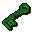

Lesser demon
| Config name | dragonslayer_demon |
| NPC id | 752 |
| Combat level | 82 |
| Hitpoints | 79 |
| Attack / Strength / Defence | 68 / 70 / 71 |
| Respawn | 60 ticks |
| Options | Attack |
| Aggression | cowardly |
| Wander range | 6 tiles from spawn |
| Max range | 8 tiles from spawn |
| Defined in | scripts/quests/quest_dragon/configs/quest_dragon.npc |
| Bonuses | Magic def -10 |
Lesser demon
Lesser, but still pretty big.
Show all 1 spawn on the world map → Open in knowledge graph →
Drops
Drop script: scripts/quests/quest_dragon/scripts/melzars_maze.rs2 (specific handler)
Always dropped
| Item | Quantity | Rarity | Notes |
|---|---|---|---|
| 1 | Always | ||
 Key | 1 | Always |
Locations
| Area | Coordinates | Level | Count | Map |
|---|---|---|---|---|
| Melzar's Maze (underground) | 2936, 9650 | 0 | 1 | view |
Quests
Referenced in scripts
scripts/quests/quest_dragon/scripts/melzars_maze.rs2